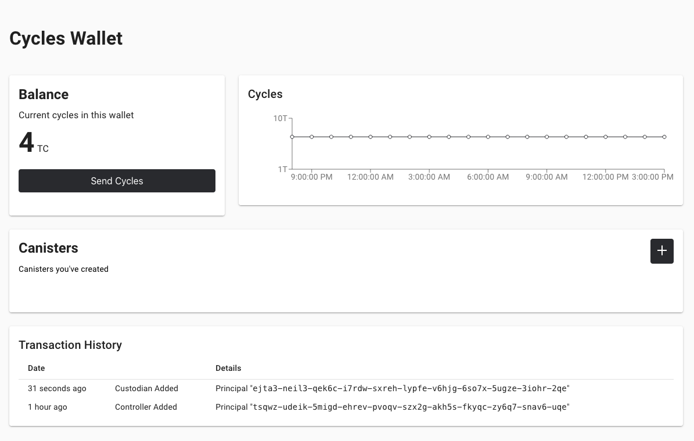
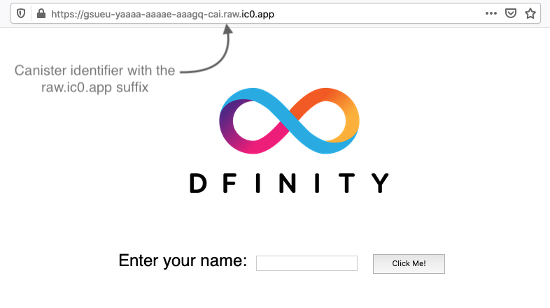

网络部署
这个_快速入门_方案假设你是第一次安装DFINITY Canister SDK，并在Internet Computer区块链主网上部署默认项目。
如果您只是在本地开发环境中部署项目，请参见本地开发场景。
首先，让我们构建和部署一个简单的 Hello dapp，它只有一个功能——称为 greet。
greet 函数接受一个文本参数，如果您使用命令行运行 dapp，则在终端中返回类似于 Hello, everyone! 的问候语，如果您使用的是 HTML 页面，则返回结果 在浏览器中访问 dapp。
开始之前
在下载并安装此版本的 DFINITY Canister SDK 之前，请验证以下内容：
-
您有互联网连接并可以访问本地 macOS 或 Linux 计算机上的 shell 终端。
目前，DFINITY Canister SDK 仅在具有 macOS 或 Linux 操作系统的计算机上运行。
-
如果你想访问默认项目的默认前端，你已经安装了
node.js。 -
您有 ICP 代币或燃料费可供您使用。
您必须拥有 燃料费 才能完成本教程。 要获取燃料费，您必须将 ICP 代币转换为燃料费，或者从其他来源（例如，来自其他开发人员控制的容器或第三方燃料费提供商）提供燃料费。 本教程假设您有一个可用 ICP 代币的帐户，并说明如何将 ICP 代币转换为燃料费并将这些燃料费转移到您控制的 燃料费钱包。
有关如何获取 ICP 代币的信息，请参阅How you can get ICP tokens. 有关使用网络神经系统应用程序管理 ICP 代币的介绍，请参阅网络神经系统dapp快速入门. 有关在创建后使用默认燃料费钱包的信息，请参阅使用默认燃料费钱包.
下载安装
您可以直接从本地计算机上的终端 shell 下载最新版本的 DFINITY Canister Software Development Kit (SDK)。 如果您之前安装了 DFINITY Canister SDK，则可以跳过本节并从 Create a new project 开始。
要下载和安装：
-
在本地计算机上打开终端 shell。
例如，打开 Applications、Utilities，然后双击 Terminal 或按 kbd:[⌘ + spacebar] 打开 Search，然后键入
terminal。 -
通过运行以下命令下载并安装 DFINITY Canister SDK 包：
sh -ci "$(curl -fsSL https://sdk.dfinity.org/install.sh)"此命令提示您在本地计算机上安装 DFINITY 执行命令行界面 (CLI) 及其依赖项之前阅读并接受许可协议。
-
输入
y并按 kbd:[Return] 继续安装。该命令显示有关正在本地计算机上安装的组件的信息。
验证 SDK 是否可以使用
如果安装脚本运行时没有任何错误，那么您开始开发在 Internet Computer platform 上运行的程序所需的一切都将在您的本地计算机上可用。
要验证 SDK 是否可以使用：
-
如果您还没有打开一个终端shell，请在您的本地计算机上打开一个终端shell。
-
通过运行以下命令，检查您是否安装了 DFINITY 执行命令行界面 (CLI)，并且
dfx可执行文件在您的 PATH 中可用：dfx --version该命令显示
dfx命令行可执行文件的版本信息，类似于以下内容：dfx 0.9.2
-
通过运行以下命令预览其他
dfx命令行子命令的使用信息：dfx --help该命令显示
dfx父命令及其子命令的使用信息。
创建一个新项目
Internet Computer 的 Dapps 以 projects 开始。
您可以使用 dfx 父命令及其子命令创建项目。
对于本教程，我们将从默认示例 dapp 开始，以说明使用项目中的启动文件创建 dapp。
当您创建一个新项目时，dfx 命令行界面将默认项目目录结构添加到您的工作区。 我们在探索默认项目中介绍了构成项目目录的模板文件教程。
为您的第一个 dapp 创建一个新项目：
-
如果您还没有打开一个终端shell，请在您的本地计算机上打开一个终端shell。
-
通过运行以下命令创建一个名为
hello的新项目：dfx new hellodfx new hello命令为您的项目创建一个新的hello项目目录、模板文件和一个新的helloGit 存储库。如果您使用不同的项目名称而不是
hello，请记下您使用的名称。 在这些说明中，您需要使用该项目名称代替hello项目名称。 -
通过运行以下命令切换到您的项目目录：
cd hello
检查与 Internet Computer platform 主网的连接
有一个保留的网络别名可用于访问 Internet Computer 区块链主网。 网络别名是内部定义的系统设置，因此默认情况下您无需在项目中配置任何内容。
要检查您与 Internet Computer platform 的连接：
-
如果需要，请检查您是否位于项目的根目录中。
-
通过对网络别名
ic运行以下命令来检查 Internet Computer platform 的当前状态以及您连接到它的能力：dfx ping ic -
验证
dfx ping ic命令是否返回有关 Internet Computer platform 的信息。例如，您应该看到类似于以下的输出：
{ "ic_api_version": "0.18.0" "impl_hash": "d639545e0f38e075ad240fd4ec45d4eeeb11e1f67a52cdd449cd664d825e7fec" "impl_version": "8dc1a28b4fb9605558c03121811c9af9701a6142" "replica_health_status": "healthy" "root_key": [48, 129, 130, 48, 29, 6, 13, 43, 6, 1, 4, 1, 130, 220, 124, 5, 3, 1, 2, 1, 6, 12, 43, 6, 1, 4, 1, 130, 220, 124, 5, 3, 2, 1, 3, 97, 0, 129, 76, 14, 110, 199, 31, 171, 88, 59, 8, 189, 129, 55, 60, 37, 92, 60, 55, 27, 46, 132, 134, 60, 152, 164, 241, 224, 139, 116, 35, 93, 20, 251, 93, 156, 12, 213, 70, 217, 104, 95, 145, 58, 12, 11, 44, 197, 52, 21, 131, 191, 75, 67, 146, 228, 103, 219, 150, 214, 91, 155, 180, 203, 113, 113, 18, 248, 71, 46, 13, 90, 77, 20, 80, 95, 253, 116, 132, 176, 18, 145, 9, 28, 95, 135, 185, 136, 131, 70, 63, 152, 9, 26, 11, 170, 174] }
确认您的开发者身份和帐本帐户
所有 ICP 代币交易都记录在一个 ledger canister 中运行在互联网计算机区块链上。 账本容器由所有 ICP 代币持有者的*帐户标识符*和*余额*组成。
在您可以转移您在帐本帐户中持有的任何 ICP 代币之前，您需要向帐本发送一条安全且经过正确签名的消息，以验证您的身份并授权您的开发人员身份完成交易。
根据您设置保管 ICP 代币的方式，连接到账本和完成交易所需的硬件、软件和步骤可能会有所不同。
例如，您可以连接到账本并从硬件钱包、使用硬件安全模块 (HSM) 设备、通过网络神经系统 (NNS) 前端应用程序或使用 DFINITY Canister SDK dfx 命令行界面。
每种方法都提供了一个不同的界面，用于签署和向分类帐发送消息并代表您作为帐户持有人的身份。
关于您的开发者身份
第一次使用 DFINITY Canister SDK 时，dfx 命令行工具会为您创建一个 default 开发者身份。此身份由 主体 数据类型和通常称为 主体标识符 的主体的文本表示形式表示。
您身份的这种表示类似于比特币或以太坊地址。
但是，与您的开发者身份相关联的主体通常与您在帐本中的*帐户标识符*不同。主体标识符和帐户标识符是相关的——两者都提供了您身份的文本表示——但它们使用不同的格式。
连接账本获取账户信息
出于本教程的目的——没有硬件钱包或外部应用程序连接到账本——我们将使用您的开发者身份来检索您的账本账户标识符，然后将 ICP 代币从账本账户标识符转移到受控的燃料费钱包容器通过您的开发者身份。
要在账本中查找您的帐户：
-
通过运行以下命令确认您当前使用的开发者身份：
dfx identity whoami在大多数情况下，您应该看到您当前正在使用 default` 开发人员身份。 例如：
default
-
通过运行以下命令查看当前身份的主体的文本表示：
dfx identity get-principal此命令显示类似于以下内容的输出：
tsqwz-udeik-5migd-ehrev-pvoqv-szx2g-akh5s-fkyqc-zy6q7-snav6-uqe
-
通过运行以下命令获取您的开发者身份的帐户标识符：
dfx ledger account-id此命令显示与您的开发人员身份关联的帐本帐户标识符。 例如，您应该看到类似于以下的输出：
03e3d86f29a069c6f2c5c48e01bc084e4ea18ad02b0eec8fccadf4487183c223
-
通过运行以下命令检查您的帐户余额：
dfx ledger --network ic balance此命令显示分类帐帐户中的 ICP 代币余额。 例如，您应该看到类似于以下的输出：
10.00000000 ICP
将 ICP 代币转换为燃料费
现在您已经确认了您的账户信息和当前的 ICP 代币余额，您可以将其中一些 ICP 代币转换为燃料费并将它们移动到燃料费钱包中。
转移 ICP 代币以创建燃料费钱包：
-
通过运行类似于以下的命令从您的帐本帐户转移 ICP 代币，创建一个具有燃料费的新容器：
dfx ledger --network ic create-canister <principal-identifier> --amount <icp-tokens>此命令将您为
--amount参数指定的 ICP 代币数量转换为燃料费，并将燃料费与您指定的主体控制的新容器标识符相关联。例如，以下命令将 .25 ICP 代币转换为燃料费，并将默认身份的主体标识符指定为新容器的控制器：
dfx ledger --network ic create-canister tsqwz-udeik-5migd-ehrev-pvoqv-szx2g-akh5s-fkyqc-zy6q7-snav6-uqe --amount .25
如果交易成功，账本会记录该事件，您应该会看到类似于以下内容的输出：
Transfer sent at BlockHeight: 20 Canister created with id: "gastn-uqaaa-aaaae-aaafq-cai"
-
通过运行类似于以下的命令，在新创建的容器占位符中安装燃料费钱包代码：
dfx identity --network ic deploy-wallet <canister-identifer>For example:
dfx identity --network ic deploy-wallet gastn-uqaaa-aaaae-aaafq-cai
此命令显示类似于以下内容的输出：
Creating a wallet canister on the ic network. The wallet canister on the "ic" network for user "default" is "gastn-uqaaa-aaaae-aaafq-cai"
验证您的燃料费钱包
将 ICP 代币转换为燃料费后，您可以验证燃料费钱包容器并检查您当前的燃料费余额。
要验证您的燃料费钱包：
-
通过运行以下命令验证您部署的燃料费钱包的容器标识符：
dfx identity --network ic get-wallet该命令显示您的燃料费钱包的容器标识符，输出类似于以下内容：
gastn-uqaaa-aaaae-aaafq-cai
-
通过运行类似于以下的命令，检查您的燃料费钱包容器是否已正确配置并保持燃料费平衡：
dfx wallet --network ic balance该命令返回您的燃料费钱包的余额。 例如：
15430122328028812 cycles.
您还可以使用类似于以下的 URL 在 Web 浏览器中访问您的默认燃料费钱包：
https://<WALLET-CANISTER-ID>.raw.ic0.app
首次访问该应用程序时，您会看到一条通知，表明您正在使用匿名设备，并提示您验证您的身份、授权访问钱包并注册您的设备。 .单击 Authenticate 以继续使用 Internet 身份服务。 .如果您之前已注册身份或以新用户的身份注册服务，请输入您的*用户编号*。
有关 Internet 身份服务以及如何注册多个身份验证设备和方法的更多信息，请参阅如何使用 Internet 身份服务。 .使用您的用户号和您已注册的身份验证方法（例如安全密钥或指纹）进行身份验证。 .单击 Proceed 以访问默认循环钱包应用程序。 .通过复制 Register Device 页面中显示的命令并在终端中运行来注册您用于此会话的设备。
例如，使用类似于以下的命令调用循环钱包容器的
authorize方法：dfx canister --no-wallet --network ic call "gastn-uqaaa-aaaae-aaafq-cai" authorize '(principal "ejta3-neil3-qek6c-i7rdw-sxreh-lypfe-v6hjg-6so7x-5ugze-3iohr-2qe")'
确保您复制的命令具有
--no-wallet选项和正确的网络 (ic) 别名。 您应该将容器标识符（在此示例中为gastn-uqaaa-aaaae-aaafq-cai）识别为与您的身份相关联的燃料费钱包。 但是，如果这是您在 Internet Computer platform 上的第一个钱包，您可能无法识别被授权的委托人。 在这种情况下，使用不同的主体是预期的行为。运行
authorize命令后浏览器刷新时，会显示您的主账户的燃料费钱包。 -
在浏览器中查看您的燃料费余额和活动。
例如：
有关可用于使用默认燃料费钱包的命令和方法的更多信息，请参阅使用默认燃料费钱包。
注册、构建和部署应用程序
在您验证了您的燃料费钱包余额后，您可以注册、构建和部署您的示例应用程序。
要在 Internet Computer 区块链主网上部署您的第一个应用程序：
-
在您的终端 shell 中，检查您是否仍在项目的根目录中。
-
确保
node模块在您的项目目录中可用，如果需要，通过运行以下命令：npm install有关此步骤的更多信息，请参阅确保节点在项目中可用
-
通过运行以下命令注册、构建和部署您的第一个应用程序：
dfx deploy --network ic--network选项指定用于部署 dapp 的网络别名或 URL。 此选项需要安装在 Internet Computer 区块链主网上。dfx deploy命令输出显示有关它执行的操作的信息。例如，这一步注册了两个标识符——一个用于`hello
主程序，一个用于hello_assets`前端用户界面——以及类似以下的安装信息：Deploying all canisters. Creating canisters... Creating canister "hello"... "hello" canister created on network "ic" with canister id: "5o6tz-saaaa-aaaaa-qaacq-cai" Creating canister "hello_assets"... "hello_assets" canister created on network "ic" with canister id: "5h5yf-eiaaa-aaaaa-qaada-cai" Building canisters... Building frontend... Installing canisters... Installing code for canister hello, with canister_id 5o6tz-saaaa-aaaaa-qaacq-cai Installing code for canister hello_assets, with canister_id 5h5yf-eiaaa-aaaaa-qaada-cai Authorizing our identity (default) to the asset canister... Uploading assets to asset canister... /index.html 1/1 (472 bytes) /index.html (gzip) 1/1 (314 bytes) /index.js 1/1 (260215 bytes) /index.js (gzip) 1/1 (87776 bytes) /main.css 1/1 (484 bytes) /main.css (gzip) 1/1 (263 bytes) /sample-asset.txt 1/1 (24 bytes) /logo.png 1/1 (25397 bytes) /index.js.map 1/1 (842511 bytes) /index.js.map (gzip) 1/1 (228404 bytes) /index.js.LICENSE.txt 1/1 (499 bytes) /index.js.LICENSE.txt (gzip) 1/1 (285 bytes) Deployed canisters.
如果您没有将足够的 ICP 代币转换为燃料费来完成操作，您可以通过运行类似于以下的命令将燃料费添加到您的燃料费钱包：
dfx ledger --network ic top-up gastn-uqaaa-aaaae-aaafq-cai --amount 1.005
此命令将额外的
1.005ICP 代币转换为gastn-uqaaa-aaaae-aaafq-cai燃料费钱包标识符的循环。 该命令返回类似于以下内容的输出：Transfer sent at BlockHeight: 81520 Canister was topped up!
-
Call the
hellocanister and the predefinedgreetfunction by running the following command:dfx canister --network ic call hello greet '("everyone": text)'让我们仔细看看这个例子：
-
使用`--network ic
选项表示你要调用的容器部署在ic上。 `ic网络别名是用于访问 Internet Computer 区块链主网的内部保留别名。 -
注意
--network ic选项必须在操作子命令之前，在这种情况下，它是dfx canister call命令。 -
hello参数指定要调用的容器的名称。 -
greet参数指定要在hello容器中调用的函数的名称。 -
文本字符串
everyone是您要传递给greet函数的参数。
-
-
验证命令是否显示
greet函数的返回值。例如：
("Hello, everyone!") -
重新运行`dfx wallet balance` 命令或刷新浏览器以查看您的新燃料费余额和最近的活动。
测试 dapp 前端
现在您已经验证了您的 dapp 已经部署并使用命令行测试了它的操作，让我们验证您是否可以使用 Web 浏览器访问前端。
访问 dapp 前端：
-
打开浏览器。
-
使用由
hello_assets标识符和boundary.ic0.app后缀组成的 URL 导航到 dapp 的前端。如果您没有记下容器标识符，则可以通过运行以下命令进行查找：
dfx canister --network ic id hello_assets例如，完整的 URL 应类似于以下内容：
https://gsueu-yaaaa-aaaae-aaagq-cai.raw.ic0.app
导航到此 URL 会显示模板应用程序的 HTML 入口页面。 例如：

-
键入问候语，然后单击 Click Me 以返回问候语。
下一步
既然您已经了解了如何在 Internet Computer 区块链上部署 dapp，那么您就可以开发和部署自己的程序了。
您可以在整个文档中找到更详细的示例和教程，以帮助您了解如何使用 Motoko 以及如何为互联网计算机区块链开发 dapp。
以下是关于下一步去哪里的一些建议：
-
Tutorials探索在本地开发环境中构建前端和后端 dapp。
-
What is Candid? 了解 Candid 接口描述语言如何实现服务互操作性和可组合性。
-
Motoko at-a-glance 了解使用 Motoko 的功能和语法。